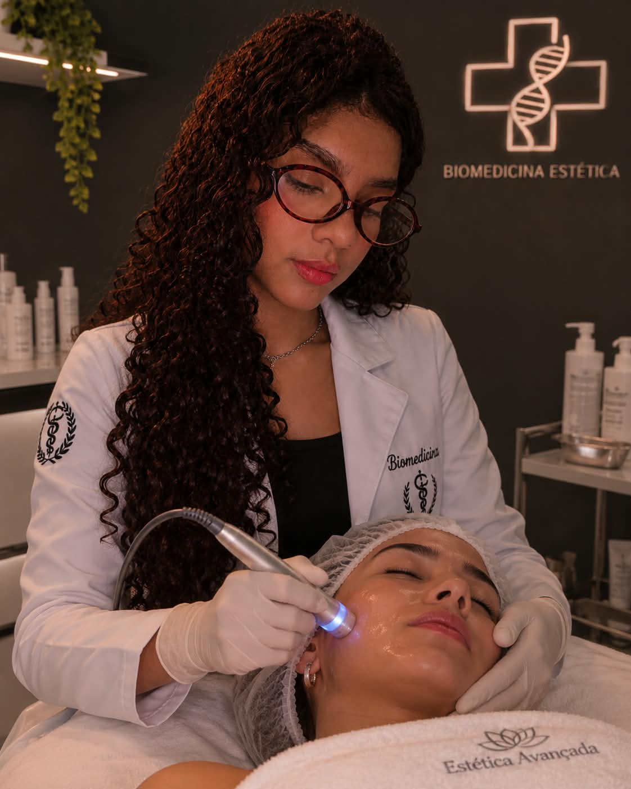
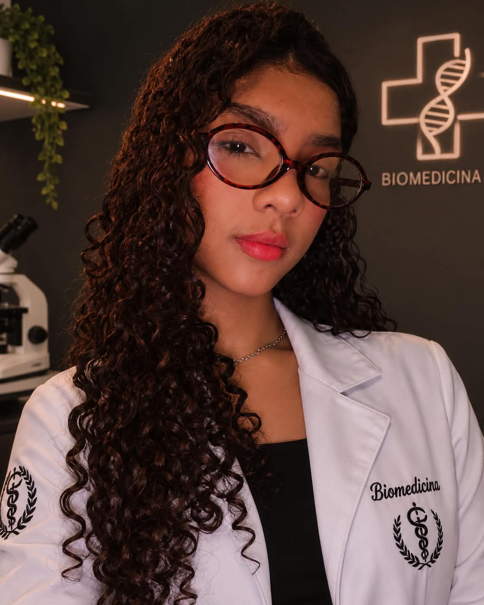

Análises Clínicas
Realização e interpretação de exames laboratoriais que auxiliam na investigação e no diagnóstico de doenças.
PROFISSÃO • CIÊNCIA • SAÚDE
Uma profissão dedicada à investigação científica, à prevenção de doenças e ao desenvolvimento de soluções que contribuem para a saúde e o bem-estar.

SOBRE A PROFISSÃO
A Biomedicina é uma área da saúde que integra conhecimentos de biologia, química e medicina para investigar os processos relacionados ao funcionamento do organismo humano.
O biomédico atua em diferentes setores, contribuindo para o diagnóstico laboratorial, pesquisas científicas, desenvolvimento de tecnologias e diversas outras especialidades.
Seu trabalho é fundamental para ampliar o conhecimento sobre doenças, auxiliar profissionais da saúde e contribuir para a qualidade de vida da população.
ÁREAS DE CONHECIMENTO
A Biomedicina oferece diferentes possibilidades de atuação profissional.
Realização e interpretação de exames laboratoriais que auxiliam na investigação e no diagnóstico de doenças.
Estudo de microrganismos, como bactérias, fungos e vírus, relacionados à saúde.
Atuação em áreas relacionadas aos métodos de diagnóstico por imagem, conforme habilitação profissional.
Aplicação de procedimentos estéticos dentro das competências e habilitações regulamentadas.
Desenvolvimento de estudos e pesquisas para ampliar o conhecimento científico na área da saúde.
Investigação de material genético e processos moleculares relacionados ao funcionamento celular.
TUDO SOBRE MIM
Olá me chamo Anna lívia, tenho 22 anos e escolhi a Biomedicina/Estética po amar a área da beleza, do cuidado e da autoestima. meu sonho é transformar vidas e fazer as pessoas se sentirem ainda mais confiante com se mesmo.

FORMAÇÃO PROFISSIONAL
A formação em Biomedicina envolve o estudo de disciplinas fundamentais para compreender o organismo humano, suas alterações e os métodos utilizados na investigação científica.
A graduação, o aperfeiçoamento contínuo e a habilitação nas áreas de atuação são essenciais para o exercício responsável da profissão.
Curso: Biomedicina
Instituição: Faculdade de Ciências da Saúde
Conclusão: 2025
Habilitação: Biomedicina e Estética
CONTATO PROFISSIONAL
3891059028 montes claro - mg Dra. Anna lívia Aguiar
Entre em contato para conhecer mais sobre minha trajetória profissional e minha atuação na área da Biomedicina.
Enviar e-mail